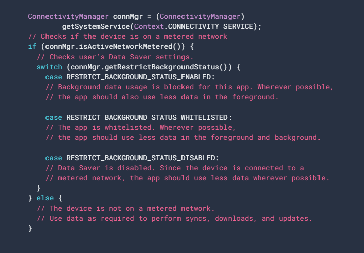

Comunicación Por Red:
I) ¿CÓMO CONECTARSE A LA RED?
Para que se puedan llevar a cabo operaciones de red en tu app, el manifiesto debe incluir los siguientes permisos:
.png)
A) ¿Cómo diseñar una comunicación de red segura?
Antes de agregar funcionalidades de red en tu app, debes asegurarte de que los datos y la información que esta contenga permanezcan seguros cuando se transmitan a través de una red. Para hacerlo, sigue las siguientes recomendaciones:
-
· Minimiza la cantidad de datos del usuario sensibles o personales que se transmiten a través de la red.
- · Envía todo el tráfico de red de tu app a través de SSL (Secure Sockets Layer).
- · Puedes crear una configuración de seguridad de la red, que le permita a tu app confiar en CA personalizadas o restringir el conjunto de CA (Autoridades de Certificación) del sistema en las que confía para lograr una comunicación segura.
B) ¿Cómo elegir un cliente HTTP?
La mayoría de las apps para Android conectadas a redes utilizan HTTP para enviar y recibir datos. La plataforma de Android incluye el cliente HttpsURLConnection, que admite TLS (Transport Layer Security), cargas y descargas de transmisión, tiempos de espera configurables, IPv6 y agrupaciones de conexiones.
C) ¿Cómo Buscar DNS?
En dispositivos con Android 10 y versiones posteriores, se agregó compatibilidad nativa para búsquedas de DNS especializadas mediante búsquedas de Cleartext y un modo de DNS mediante TLS. La API de DnsResolver proporciona una resolución asíncrona genérica que te permite buscar SRV (Service Resource Records), NAPTR (Naming Address Pointer) y otros tipos de registros.
D) ¿Cómo introducir las operaciones de red en un subproceso independiente?
El siguiente fragmento de Activity usa un Fragment sin interfaz gráfica para encapsular las operaciones de red asíncronas. También se debe implementar la interfaz de DownloadCallback, lo que permite que el fragmento vuelva a llamar a la Activity en caso de que necesite un estado de conectividad o enviar una actualización a la IU.
.png)
E) ¿Cómo implementar un fragmento sin interfaz gráfica para encapsular operaciones de red?
Como NetworkFragment se ejecuta en el subproceso de IU de forma predeterminada, usa AsyncTask para ejecutar las operaciones de red en un subproceso en segundo plano.
.png)
Cuando usas una subclase de AsyncTask para ejecutar operaciones de red, debes tener cuidado no crear una fuga de memoria en el caso de que se destruya la Activity a la que hace referencia AsyncTask antes que termine su trabajo en segundo plano. Para garantizar que esto no suceda, el siguiente fragmento borra cualquier referencia a la Activity en el método onDetach() del Fragment.
.png)
F) Usa HttpsUrlConnection Para Obtener Datos:
El método downloadUrl() debería tomar la URL en cuestión y usarla para realizar una solicitud HTTP GET. Una vez establecida la conexión, debes usar el método getInputStream() para recuperar los datos como InputStream. En el siguiente fragmento, se usa la API de HttpsURLConnection para lograr esto:
.png)
G) ¿Cómo convertir InputStream en una string?
Un InputStream es una fuente legible de bytes. Cuando se obtiene un elemento InputStream, es común decodificarlo o convertirlo en un tipo de datos de destino. Por ejemplo, si descargaras datos de imágenes, podrías decodificarlos y mostrarlos de la siguiente manera:
.png)
H) ¿Cómo conservar la actividad después de hacer cambios en la configuración?
Si deseas conservar la actividad después de cualquier cambio de configuración, debes conservar el Fragment original y asegurarte de que la Activity reconstruida haga referencia a él. Primero, tu NetworkFragment debería llamar a setRetainInstance(true) en su método onCreate(), como se muestra a continuación:
.png)
Luego, modifica la manera en que se inicializa NetworkFragment en tu método estático getInstance():
.png)
II) ¿CÓMO ADMINISTRAR EL USO DE LA RED?
A) ¿Cómo comprobar la conexión de red de un dispositivo?
Para verificar la conexión de red, por lo general, se usan las siguientes clases:
- · ConnectivityManager: Responde consultas sobre el estado de la conexión de red. También notifica a las aplicaciones cuando cambia la conectividad de red.
- · NetworkInfo: Describe el estado de una interfaz de red de un tipo determinado (actualmente, móvil o Wi-Fi).
En este fragmento de código, se prueba la conectividad de red para Wi-Fi y redes móviles.
Siempre debes verificar isConnected() antes de realizar operaciones de red, ya que isConnected() se encarga de aspectos como redes móviles inestables, el modo de avión y datos restringidos en segundo plano.
.png)
El método getActiveNetworkInfo() muestra una instancia de NetworkInfo, que representa la primera interfaz de red conectada que puede encontrar, o null si ninguna de las interfaces está conectada.
.png)
B) ¿Cómo administrar el uso de la red?
Para escribir una app que admita el acceso a la red y administración del uso de la red, tu manifiesto debe tener los permisos correctos y filtros de intents.
El extracto de manifiesto que se muestra a continuación incluye los siguientes permisos:
- · android.permission.INTERNET: Les permite a las aplicaciones abrir sockets de red.
- · android.permission.ACCESS_NETWORK_STATE: Les permite a las aplicaciones acceder a información sobre redes.
.png)
C) ¿Cómo implementar una actividad de preferencia?
El extracto de manifiesto anterior, la actividad de la app de muestra SettingsActivity tiene un filtro de intents para la acción ACTION_MANAGE_NETWORK_USAGE. SettingsActivity es una subclase de PreferenceActivity. Muestra preferencias que permite a los usuarios especificar lo siguiente:
- · Si desean mostrar resúmenes para cada entrada de feed XML o simplemente un vínculo para cada entrada.
- · Si quieren descargar el feed XML en caso de que haya alguna conexión de red disponible o solo si la conexión Wi-Fi está disponible.
D) ¿Cómo responder a los cambios de preferencias?
En este fragmento, la app verifica la configuración de preferencias en onStart(). Si hay una coincidencia entre la configuración y la conexión de red del dispositivo (por ejemplo, si la configuración es "Wi-Fi" y el dispositivo tiene una conexión Wi-Fi), la app descarga el feed y actualiza la pantalla.
.png)
E) ¿Cómo detectar cambios de conexión?
Cuando cambia la conexión de red del dispositivo, NetworkReceiver intercepta la acción CONNECTIVITY_ACTION, determina el estado de la conexión de red y establece los indicadores wifiConnected y mobileConnected en verdadero o falso. El resultado es que, la próxima vez que el usuario regrese a la app, esta solo descargará el feed más reciente y actualizará la pantalla si NetworkActivity.refreshDisplay se establece en true.
.png)
III) ¿CÓMO OPTIMIZAR EL USO DE DATOS DE RED?
A) ¿Cómo optimizar el uso de datos de red?
Durante la vida útil de un smartphone, el costo de un plan de datos móviles puede superar fácilmente el costo del propio dispositivo. Esta capacidad es particularmente útil cuando se usa el roaming, cerca del final del ciclo de facturación, o bien para un pequeño paquete de datos prepago
Los usuarios pueden incluir apps específicas en la lista blanca para permitir el uso de datos medidos en segundo plano, incluso cuando está activado Ahorro de datos. Android 7.0 extiende la API de ConnectivityManager para que las apps puedan recuperar las preferencias del Ahorro de datos del usuario y controlar los cambios en las preferencias
B) ¿Cómo verificar las preferencias de Ahorro de datos?
En Android 7.0 (API nivel 24), las apps pueden usar la API de ConnectivityManager para determinar las restricciones de uso de datos que se aplican. Con el método getRestrictBackgroundStatus(), se muestra uno de los siguientes valores:
· RESTRICT_BACKGROUND_STATUS_DISABLED: Ahorro de datos está inhabilitado.
· RESTRICT_BACKGROUND_STATUS_ENABLED: El usuario habilitó Ahorro de datos para esta app. Las apps deberían esforzarse por limitar el uso de datos en primer plano y manejar con facilidad las restricciones de uso de datos en segundo plano.
· RESTRICT_BACKGROUND_STATUS_WHITELISTED: El usuario habilitó Ahorro de datos, pero la app se encuentra en la lista blanca. Igualmente, las apps deben esforzarse por limitar el uso de datos en primer y segundo plano.

C) ¿Cómo supervisar los cambios en las preferencias de Ahorro de Datos?
Las apps pueden controlar los cambios en las preferencias de Ahorro de datos mediante la creación de un BroadcastReceiver para escuchar ConnectivityManager.ACTION_RESTRICT_BACKGROUND_CHANGED y mediante un registro dinámico del receptor con Context.registerReceiver(). Cuando una app recibe esta transmisión, debe verificar si las nuevas preferencias del Ahorro de datos afectan los permisos. Para ello, debe llamar a ConnectivityManager.getRestrictBackgroundStatus().
IV) DESCRIPCIÓN GENERAL DE VOLLEY:
A) Descripción General de Volley
Volley es una biblioteca HTTP que facilita y agiliza el uso de redes en apps para Android. Volley está disponible en GitHub y ofrece estos beneficios:
· Programación automática de solicitudes de red.
· Varias conexiones de red simultáneas.
· Almacenamiento de respuestas en caché y en disco transparentes con coherencia de caché en HTTP estándar.
· API de cancelación de solicitudes (permite cancelar una única solicitud, o bien establecer bloques o grupos de solicitudes para cancelar).
· Ordenamiento sólido que permite completar correctamente la IU con datos recuperados de forma asíncrona de la red.
· Herramientas de depuración y rastreo.
Volley no es adecuado para operaciones de transmisión o descarga grandes, ya que almacena todas las respuestas en la memoria durante el análisis. Para operaciones de descarga grandes, te recomendamos usar una alternativa como DownloadManager.
La biblioteca principal de Volley se desarrolla en GitHub y contiene la canalización principal de despacho de solicitudes, además de un conjunto de utilidades que pueden aplicarse de manera general disponible en la "caja de herramientas" de Volley. La manera más fácil de incorporar Volley en tu proyecto es agregar la siguiente dependencia al archivo build.gradle de tu app:
V) ¿CÓMO ENVIAR UNA SOLICITUD SIMPLE?
A) ¿Cómo enviar una solicitud simple?
En un nivel alto, puedes usar Volley para crear una RequestQueue y pasarle objetos Request. La RequestQueue administra los subprocesos de trabajo para ejecutar las operaciones de red, leer la caché y escribir en ella, y analizar las respuestas.
B) ¿Cómo agregar el permiso de internet?
Para usar Volley, debes agregar el permiso android.permission.INTERNET al manifiesto de tu app. Sin este permiso, tu app no podrá conectarse a la red.
C) ¿Cómo usar el newRequestQueue?
Volley proporciona un método de conveniencia Volley.newRequestQueue, que configura una RequestQueue por ti mediante valores predeterminados y, luego, inicia la cola. Por ejemplo:
La ejecución en el subproceso principal es conveniente para completar los controles de IU con los datos que se reciben, ya que puedes modificar libremente los controles de IU directamente desde tu controlador de respuestas.
D) ¿Cómo enviar una solicitud?
Para enviar una solicitud, simplemente debes crearla y agregarla a la RequestQueue con add(), como se muestra más arriba. Una vez que lo haces, esta pasa por la canalización, se envía, se analiza su respuesta sin procesar y se entrega. Cuando llamas a add(), Volley ejecuta un subproceso de procesamiento de caché y un conjunto de subprocesos de despacho de redes. En la siguiente imagen se puede observar el ciclo de vida de una solicitud:
E) ¿Cómo cancelar una solicitud?
Para cancelar una solicitud, llama al cancel() en tu objeto Request. Una vez que la canceles, Volley garantizará que nunca se llame a tu controlador de respuestas, lo que en la práctica significa que puedes cancelar todas las solicitudes pendientes en el método onStop() de tu actividad y no tienes que llenar tus controladores de respuestas con verificaciones para getActivity() == null, en caso de que ya se haya llamado a onSaveInstanceState(), o bien a otro código estándar defensivo.
A fin de aprovechar este comportamiento, generalmente, deberías registrar todas las solicitudes en curso para poder cancelarlas en el momento adecuado. Por ejemplo, puedes etiquetar todas las solicitudes con la Activity que las realiza y llamar a requestQueue.cancelAll(this) desde onStop().
VI) ¿CÓMO CONFIGURAR REQUESTQUEUE?
A) ¿Cómo configurar una red y una caché?
Una RequestQueue necesita dos cosas a fin de realizar su trabajo: una red mediante la cual transportar las solicitudes y una caché para administrar el almacenamiento en caché. Hay implementaciones estándar de estas en la caja de herramientas de Volley: DiskBasedCache proporciona una caché de un archivo por respuesta con un índice en la memoria y BasicNetwork proporciona transporte de red basado en tu cliente HTTP preferido.
En este fragmento, se muestran los pasos para configurar una RequestQueue:
Si solo necesitas realizar una solicitud única y no quieres abandonar el conjunto de subprocesos, puedes crear la RequestQueue en donde sea que la necesites y llamar a stop() en la RequestQueue cuando haya vuelto tu respuesta o error con el método Volley.newRequestQueue().
VII) ¿CÓMO IMPLEMENTAR UNA SOLICITUD PREDETERMINADA?
A) ¿Cómo escribir una solicitud personalizada?
La mayoría de las solicitudes incluyen implementaciones listas para usar en la caja de herramientas; si tu respuesta es una string, una imagen o un JSON, probablemente no necesites implementar una Request personalizada
B) parseNetworkResponse
Una Response encapsula una respuesta analizada que se entregará para un tipo específico (como una string, una imagen o un elemento JSON). A continuación, se muestra una implementación de ejemplo de parseNetworkResponse().
parseNetworkResponse() toma como su parámetro a NetworkResponse, que contiene la carga útil de la respuesta como un byte[], un código de estado HTTP y encabezados de respuesta.
Tu implementación debe mostrar una Response
Volley llama a parseNetworkResponse() desde un subproceso de trabajo. De esta manera, se garantiza que las operaciones de análisis costosas, como la decodificación de un JPEG en un mapa de bits, no bloqueen el subproceso de IU